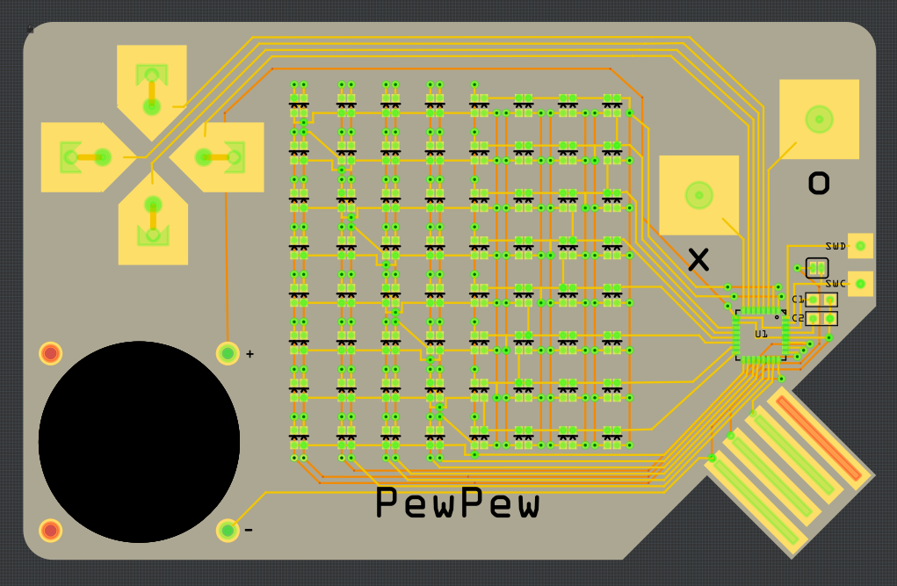

First Attempt at Routing¶
Published on 2018-07-15 in PewPew Standalone.
Since I couldn’t sleep this night, I took a stab at routing this 16×8 matrix. I decided to split it in two parts, one 7×8 and one 9×8, rotated by 90° — this time I have the whole thing covered with 17 pins, but I can scan the whole thing in just 8 steps instead of 12. I only had 16 free pins, but I re-used the programming/debugging pins (with a jumper to disconnect them from the LEDs for programming). I also fixed the USB plug and made the button pads a bit bigger.
I still don’t look forward to soldering the prototype manually…